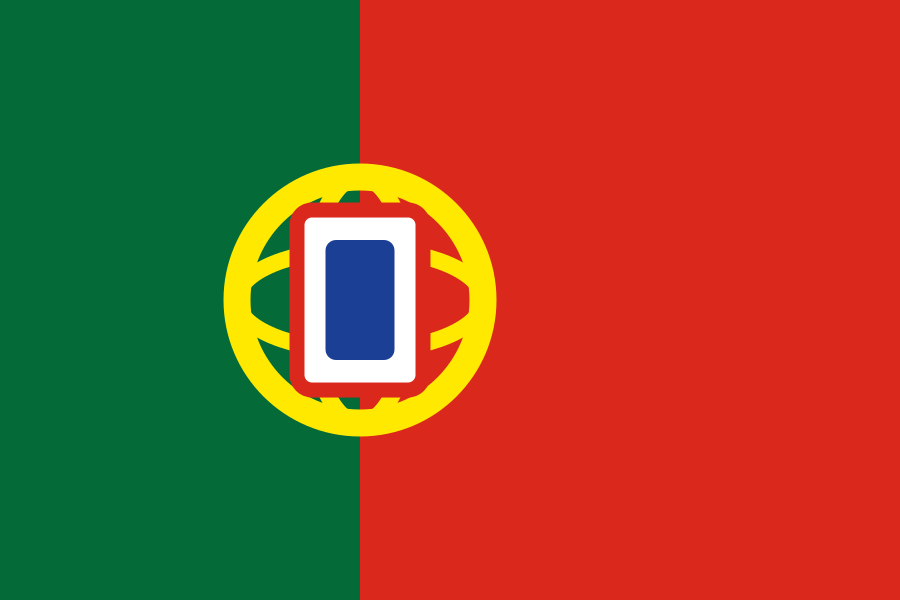

Portugal weist eine besondere Organisationsform auf. Die offizielle Rossotrudnitschestwo-Seite nennt keinen als eigene juristische Person ausgewiesenen Hausbetrieb, sondern einen Vertreter im Bestand der russischen Botschaft – führt aber eine eigene Lissabonner Kontaktadresse und nutzt die Marke „Russisches Haus“. Die belastbare Klassifikation lautet deshalb: offizielle Vertretung innerhalb der diplomatischen Mission, kein eigenständiges Zentrum verifiziert.
| Organisationsform | Rossotrudnitschestwo-Vertreter im Bestand der russischen Botschaft. Ein selbständiges Kulturzentrum als eigene juristische Person ist nicht verifiziert |
|---|---|
| Kontaktadresse | Avenida Duque de Ávila 185, 6C, Lissabon – ob dort regelmäßiger Publikumsbetrieb besteht, blieb offen |
| Markenverwendung | Die Website nutzt die Marke „Russisches Haus“, ohne einen eigenständigen Zentrumstatus zu belegen |
| Abkommen | Kultur- und Wissenschaftsabkommen unterzeichnet am 22. Juli 1994; Ratifikation am 21. Juni 1995, Dekret 22/95 veröffentlicht am 15. Juli 1995 |
| Inkrafttreten | 20. Juli 1995 nach Mitteilung Nr. 208/95 |
| Dauer der Präsenz | Nach heutiger Eigendarstellung arbeitet ein Vertreter seit mehr als 20 Jahren in Portugal; ein genaues Anfangsdatum wurde nicht gefunden |
| Maßnahme 2022 | Am 5. April 2022 erklärte Portugal zehn Mitarbeiter der russischen Mission zu personae non gratae, mit zwei Wochen Ausreisefrist |
| Betroffenheit | Offen. Weil ein Rossotrudnitschestwo-Vertreter organisatorisch zur Mission gehört, ist eine Betroffenheit denkbar – ohne Namens- oder Funktionsliste wäre jede Zuordnung jedoch Spekulation |
| Status 2026 | Website, Kontaktseite und Dokumentangebote bleiben erreichbar. Ein datierter Publikumstermin am Kontaktbüro für 2026 wurde nicht gefunden |
Nicht jede portugiesisch als „Casa da Rússia“ bezeichnete Struktur ist die offizielle Vertretung. PÚBLICO beschrieb 2022 Igor Khashin als früheren Leiter eines so bezeichneten Kulturzentrums und zugleich als Funktionär von Landsleutevereinen; CNN Portugal identifizierte dagegen Vladimir Iaroshevskii ausdrücklich als Rossotrudnitschestwo-Vertreter. Die Beziehung dieser Akteure wurde nicht verifiziert. Leseregel: „Offen“ bedeutet, dass eine Aussage in den geprüften öffentlichen Quellen nicht belegt ist. Das ist kein Beweis des Gegenteils. EU-Listung, nationaler Vollzug, politische Nichtkooperation, Vertragskündigung und tatsächliche Betriebsschließung werden getrennt bewertet.
Das Kultur- und Wissenschaftsabkommen vom 22. Juli 1994 ist vollständig dokumentiert: Ratifikation am 21. Juni 1995, Dekret 22/95 vom 15. Juli 1995, Inkrafttreten am 20. Juli 1995. Es errichtet jedoch kein eigenständiges Zentrum.
Die Vertretung stützt sich organisatorisch auf russisches Recht – die Eigenseite verweist auf den Präsidialerlass Nr. 1283 vom 13. November 2009. Das ist eine russische Organisationsnorm, kein portugiesischer Statusakt.
Ob die Vertretung eigene Konten, Mietverträge oder Vermögenswerte besitzt, ist offen. Ebenso offen ist, ob die Adresse Avenida Duque de Ávila 185, 6C ein öffentlich zugängliches Büro, eine reine Post- und Verwaltungsadresse oder ein Partnerraum ist.
Am 5. April 2022 erklärte Portugal zehn Mitarbeiter der russischen Mission zu personae non gratae. Weil ein Rossotrudnitschestwo-Vertreter organisatorisch zur Mission gehört, ist eine Betroffenheit denkbar – ohne Namens- oder Funktionsliste wäre jede Zuordnung jedoch Spekulation.
Die Vertretungswebsite und die spätere Beteiligung an Veranstaltungen sprechen dafür, dass die Funktion fortbestand oder nachbesetzt wurde. Ein zentrumsspezifischer Vollzugsakt wurde nicht gefunden.
Der von PÚBLICO beschriebene Setúbal-Komplex darf ohne zusätzlichen Register- oder Behördenbeleg nicht als staatliche Maßnahme gegen die hier untersuchte offizielle Vertretung eingeordnet werden.
Portugal ist der wichtigste Organisationsform-Kontrast dieser Sammlung: ein Vertreter innerhalb einer Botschaft statt eines klar verselbständigten Zentrums. Damit fehlt der Anknüpfungspunkt, den Maßnahmen gegen ein Haus üblicherweise brauchen.
Für Deutschland folgt daraus, vor jeder Maßnahme präzise zwischen Behörde, Botschaft, akkreditiertem Personal, separater juristischer Person und Partnernetzwerk zu unterscheiden. Diplomatische Fragen können hier stärker wiegen als bei einem eigenständigen Haus; die EU-Listung bleibt dennoch gesondert zu prüfen.
Der portugiesische Fall mahnt außerdem zur Vorsicht bei Namensgleichheit: Eine als „Casa da Rússia“ bezeichnete Vereinsstruktur und die offizielle Botschaftsvertretung dürfen nicht ohne Registerbeleg gleichgesetzt werden.
Wo sich das Einzeldokument eindeutig belegen ließ, verweist der Link unmittelbar darauf – etwa auf Gesetzblätter, Vertragsveröffentlichungen und Parlamentsdokumente. Die Ausgangsakte dokumentiert für die übrigen Belege nur Herausgeber, Titel und Datum, nicht die vollständige Dokumentadresse; dort führt der Link auf die belegte Quelldomain. Diese Tiefenlinks sind ausdrücklich offen und werden nachgetragen, sobald die Fundstelle eindeutig ist.